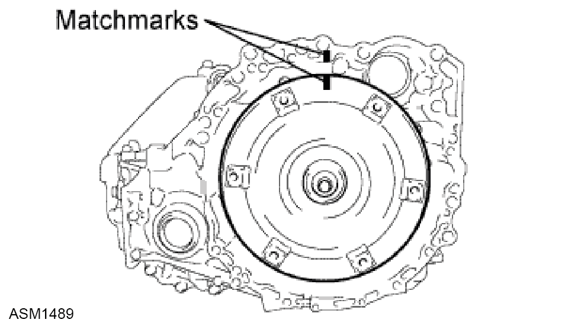
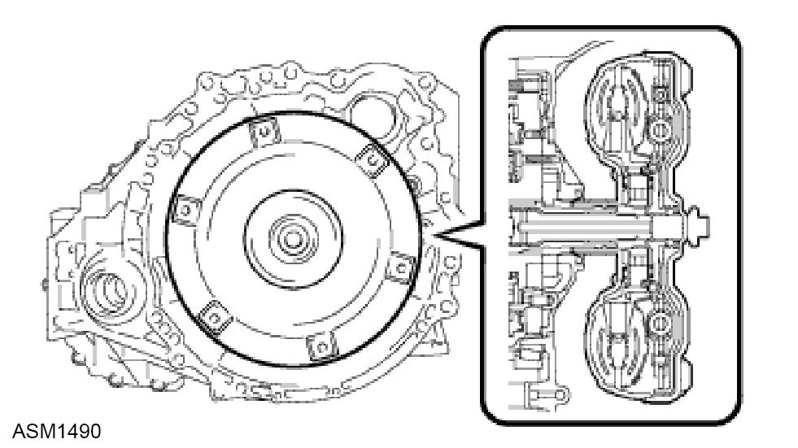
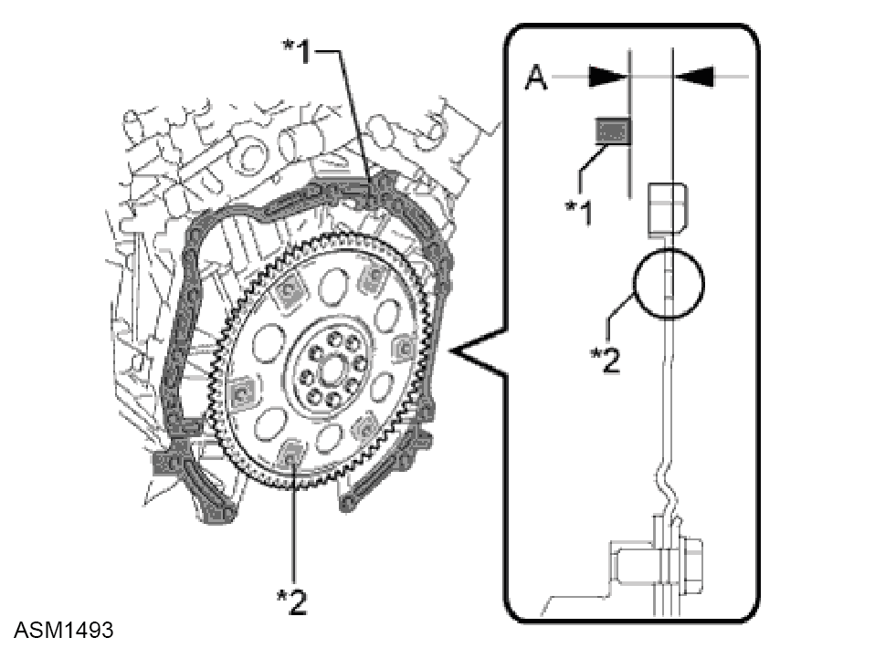
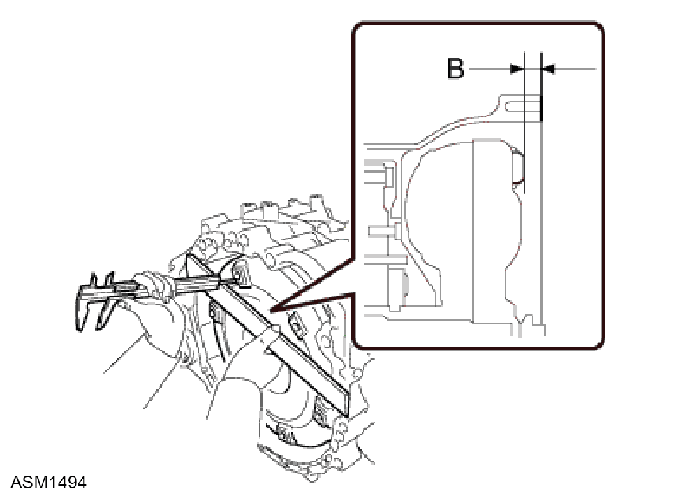

Torque Converter - V6
Print
Operation Code: 47.08.01-02
Removal
- Remove transmission assembly. Refer to procedure.
- Put matchmarks on the transaxle housing and torque converter clutch assembly.

- Remove the torque converter clutch assembly from the automatic transaxle assembly.
Installation

- Engage the splines of the input shaft and turbine runner.
- Engage the splines of the stator shaft and the stator while turning the torque converter clutch assembly.
NOTE: If the stator shaft splines are difficult to engage with the stator splines, move the torque converter back approximately 10 mm and engage the splines while rotating the torque converter.
- Turn the torque converter clutch assembly to engage the key of the oil pump drive gear into the slot on the torque converter clutch assembly.

- Using a vernier caliper and a straightedge, measure dimension "A" between the transaxle contact surfaces of the engine*1 and the torque converter contact surfaces of the drive plate*2.
 CAUTION: Make sure to deduct the thickness of the straightedge.
CAUTION: Make sure to deduct the thickness of the straightedge.

- Using a vernier caliper and a straightedge, measure dimension "B" shown in the illustration and check that "B" is greater than "A" which was measured in step 4.
CAUTION: Make sure to deduct the thickness of the straightedge.
CAUTION: If the transaxle is installed to the engine with the torque converter not sufficiently inserted, the torque converter may be damaged.
NOTE: Standard:
A + 1 mm (0.0394 in.) or more